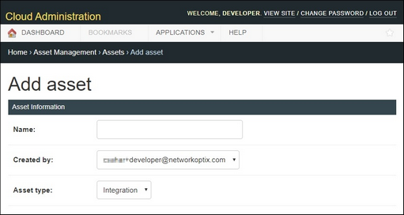
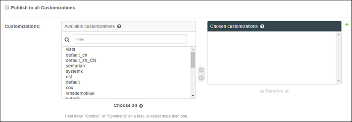
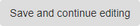
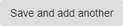

Add asset |
  
|
Add asset |
|
Use this page to add an integration.

Available fields are:
Name – enter the name for the integration (must be unique).
Created by – email of user creating the integrations.
Asset type – integration or cloud portal.
Publish to all Customizations
– If checked, integration will be published everywhere even if portal manager cannot see customizations in the list yet.
– If unchecked, list of customizations available to the portal manager will show up:

Saving Asset Information
When creating an asset, you have several options:
– creates an asset from the entered information and takes you to a page where you will see all the editable pages of the asset.

– creates an asset from the entered information and stays in the current session so you can make changes to it.
– creates an asset from the entered information and opens a new session so you can create another asset.